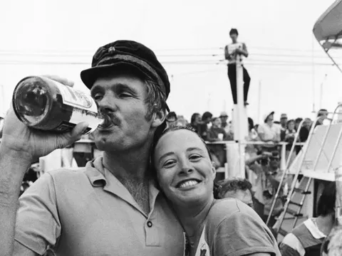
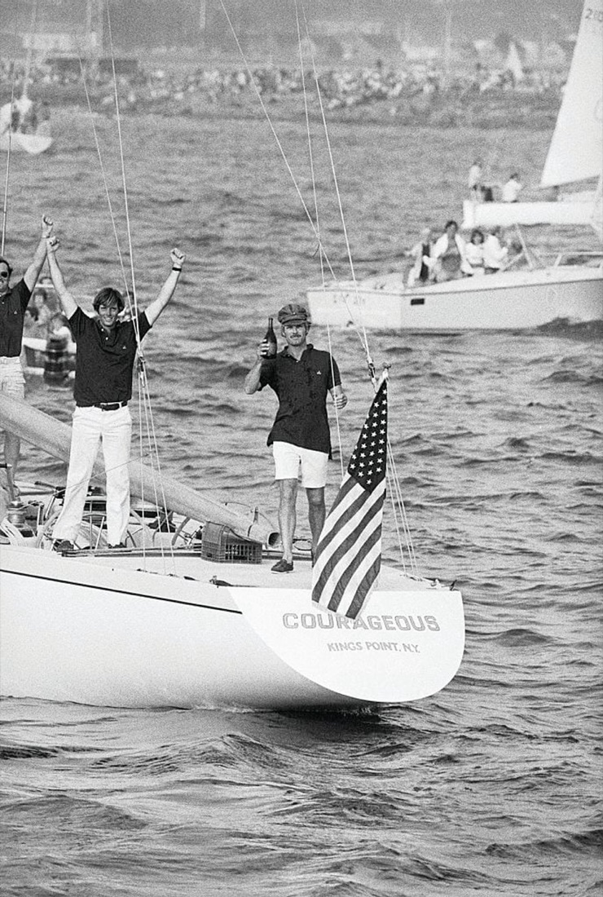

Ted Turner's legacy on the water and the spirit he brought to competitive sailing
Ted Turner died on May 6, 2026, at his home in Florida. He was 87 years old. Most of the world will remember him as the media mogul who built CNN and changed television forever. Some will remember him for his single minded devotion to protecting our environment. But for those of us in the sailing world, his death marks the end of an era. We lost one of the greatest competitive sailors America has ever produced, and one of the boldest personalities ever to step aboard a yacht.

The Man Who Won It All
Ted Turner won approximately 500 sailing trophies. Let that number sink in. Five hundred. He was a four-time Yachtsman of the Year. He won major ocean races including the Sydney to Hobart and the brutal 1979 Fastnet Race. He was inducted into both the America's Cup Hall of Fame and the National Sailing Hall of Fame.
But if you wanted to talk to Ted Turner about his greatest achievement on the water, he'd tell you about one thing: September 18, 1977. The day he became the first, and to this day, still one of the few amateur skippers to win the America's Cup.
Courageous
Turner steered Courageous to a 4-0 sweep of the Australian challenger that year in Newport, Rhode Island. Four races. Four wins. No mistakes. No excuses. Just dominance. He did it with a crew of dedicated sailors who believed in him, and with a boat that he had bought and developed into a championship-winning machine.
In an era when the America's Cup was dominated by wealthy syndicates and professional crews, Ted Turner came in as an outsider. He was brash. He was bold. He was convinced he could win, even when plenty of people thought he couldn't. And he did. Not because he had more money than everyone else, but because he had more heart, more determination, and a competitive fire that simply would not be extinguished.
That night at the celebration dinner after the final race, Ted Turner was exactly what you'd expect. He was loud. He was happy. He was celebrating with his crew, drinking rum, relishing the moment. He wasn't worried about his image or what the establishment thought. He had just won the America's Cup. He had beaten the best in the world. He wasn't going to apologize for enjoying it.
Captain Outrageous
That was Ted Turner. Captain Outrageous, as sailing magazines called him. He said what he thought. He did what he wanted. He raced hard and celebrated harder. He broke the rules, bent the rules, and challenged the establishment. And somehow, he won.

In a sport that can be stuffy and tradition-bound, Ted Turner brought personality. He brought swagger. He brought the conviction that a guy with guts and determination could come in and beat the old guard. That's what made him special. Not just the trophies or the record or even the America's Cup victory. It was the spirit he brought to racing. He showed that winning wasn't about following the script or respecting the tradition. It was about wanting it more than anyone else and being willing to do whatever it took to get it.
What He Meant to Sailing
Ted Turner elevated competitive sailing. He brought attention to it. He proved that a charismatic, bold personality could make people care about racing in a way they hadn't before. He was fascinating to watch, brilliant tactically, aggressive in his approach, and never willing to accept defeat.
More than that, he opened doors. He proved you didn't have to be born into a sailing family to be great at it. You didn't have to be a professional. You could be a businessman, a media mogul, an outsider, and you could still come in and win at the highest level of competitive sailing. That's his real legacy. Not just what he won, but what he showed was possible.
I've had clients over the years who bought boats inspired by Ted Turner's legacy. Not because they wanted his money or his media empire, but because they wanted to feel that same competitive spirit. They wanted to know what it felt like to push a boat to its limits and to test themselves against other sailors. That's Turner's impact. He made people want to get on the water and race.
A Loss for the Water
Ted Turner will be remembered for CNN and for changing the media landscape. But in the sailing world, he'll be remembered as a giant. A competitor. A winner. A guy who showed up with confidence and audacity and proved that he belonged at the top.
The water was a better place because Ted Turner raced on it. There's a generation of sailors who grew up inspired by what he did in 1977. There are countless people who picked up sailing because they wanted to experience even a fraction of what it felt like to be as competitive and as bold as he was.
That spirit, the refusal to accept limitations, the conviction that you can compete at the highest level, the willingness to be bold and take risks - that's what Ted Turner brought to sailing. And that's what will outlast him.
Fair winds and following seas, Ted. You earned it.